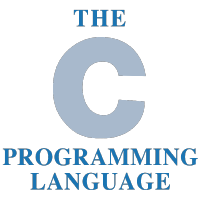
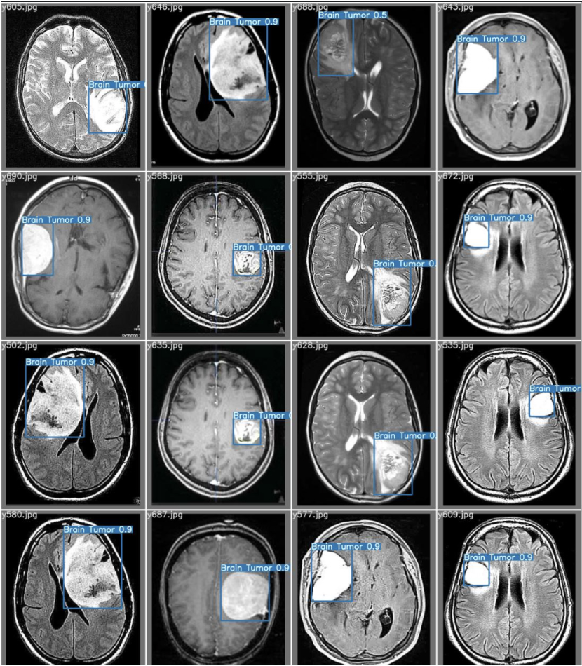
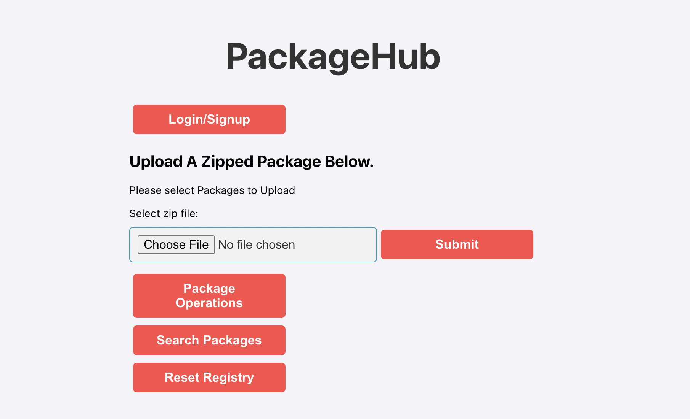
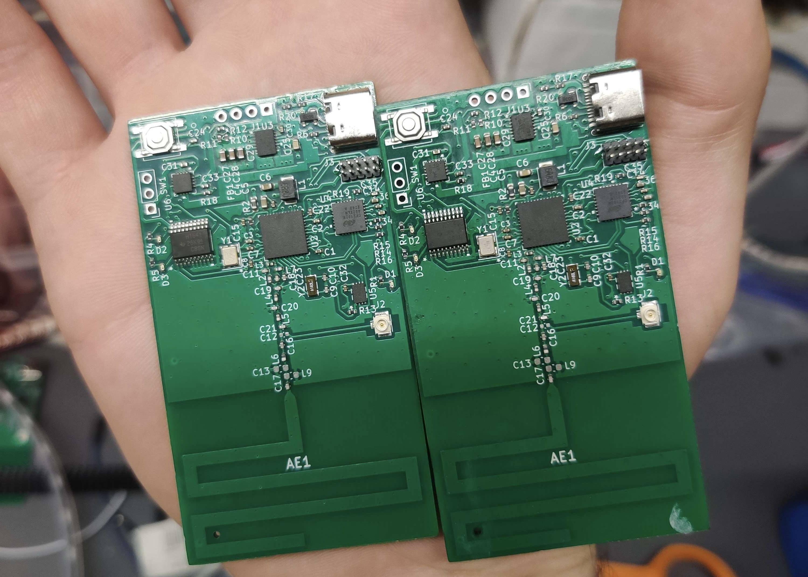
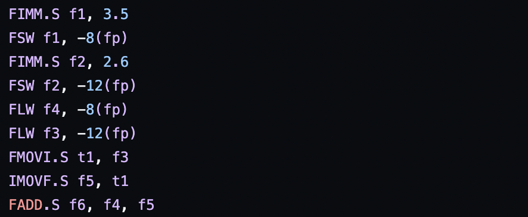
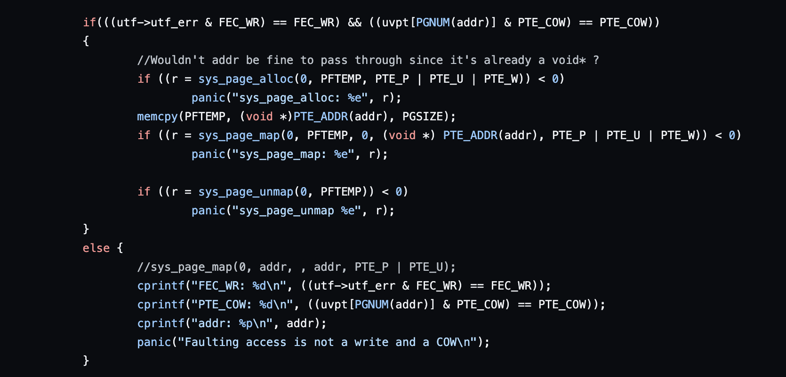

Hamza Kamel
Purdue BS CompE '23 | MS ECE '25


Profile
I'm a second-year master's student studying Electrical and
Computer Engineering at Purdue University,
with interests in Firmware Engineering, Embedded Systems, Computer Architecture, Computer Vision,
and Compilers. I'm a current member of IEEE - Eta Kappa Nu (IEEE-HKN),
the honor society of IEEE, which promotes excellence in the profession and
in education with ideals of Scholarship, Character, and Attitude.
I'm the former president of Purdue Engineering Outreach,
a student organization dedicated to promoting STEM education in the community and organizing outreach events.
Work Experience
I am currently collaborating with the Purdue Systems and Software Security Lab (PurS3) on creating a C to Rust dataset called C2R. This project, led by Professor Aravind Machiry, focuses on converting C code to idiomatic, safe Rust code to enhance code security by eliminating the use of unsafe code constructs inherent in C, thereby mitigating associated security vulnerabilities.
I served as a Firmware Engineering Intern during my internship at Neurava in the summer of 2022.
In this role, I was responsible for developing firmware for a cutting-edge smart wearable device
designed to track the vital signs of individuals at risk of SUDEP (Sudden Unexpected Death in Epilepsy).

During the fall semester of 2022, I worked as an Undergraduate Teaching Assistant, providing guidance and support to students in the Advanced C Programming course. My responsibilities included conducting office hours, reviewing course materials, and proctoring exams. 
Project Experience
I worked on evaluating YOLO-based image processing algorithms to detect and label brain tumors, focusing on improving detection accuracy and processing speed. By leveraging the Br35H dataset, I conducted a comparative analysis against baseline YOLO versions like YOLOv6 and YOLOv7, demonstrating the effectiveness of these models in medical imaging applications. 
In a software engineering project during the spring semester of 2023, I developed a TypeScript-based frontend for users to upload, update, rate, and manipulate GitHub packages. Additionally, I implemented JavaScript-based backend features for user authentication, data manipulation, database integration, and dynamic functionality. 
During the fall semester at Purdue University, as the Software Lead for the Digital Systems Senior Design project, I played a key role in developing the code for Band3. 
I developed a Java compiler that handles C-like code and supports advanced features like while loops, for loops, and extensive 3AC functionality. The project involved modifying the code generation process to handle these conversions effectively, incorporating custom instructions for seamless conversion between integers and floating-point numbers. 
I worked on the Operating System Project, where I constructed a Unix-like operating system from scratch using C. The project focused on developing a functional OS by incorporating concepts from basic JOS and adapting it to meet modern standards. I conducted thorough documentation and analysis at each milestone to address coding errors and track the progress of the kernel. 